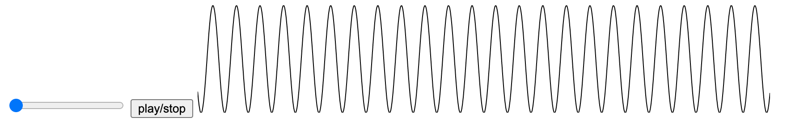
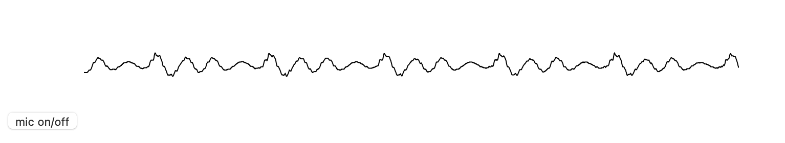

Web Audio APIで色々遊んだメモ。
サイン波を鳴らす
HTMLファイルを作成。適当にindex.htmlとしておく。
<html>
<head>
<meta charset="utf-8">
</head>
<body>
<button id="play_btn">play</button>
<script src="script.js"></script>
</body>
</html>
script.jsは以下のようにしておく。
const audioContext = new AudioContext();
const oscillatorNode = audioContext.createOscillator();
oscillatorNode.connect(audioContext.destination);
document.getElementById('play_btn')
.addEventListener('click', function() {
oscillatorNode.start();
}, false);
これで、“play” ボタンを押すとサイン波が再生される(音量に注意)。
説明
Web Audio APIの枠組みでは、色々な音やエフェクトをノードとして繋いでいく。最終的な出力を担うノードはAppContext.destinationである。
まずAudioContextのインスタンスを作成する。このContextというのはプログラミングをやっていると色々なところで現れるが
(Canvas要素に描画する際にもgetContextが出てくるし、WinAPIだとデバイスコンテキストハンドル、AndroidアプリのプログラミングでもContextがある)、自分は「Audioについて色々な情報を提供してくれるオブジェクト」くらいの理解をしている。
const audioContext = new AudioContext();
続いて、音源としてOscillatorNodeを作成し、繋いでやる。
const oscillatorNode = audioContext.createOscillator();
oscillatorNode.connect(audioContext.destination);
oscillatorNode.start()で実際に音源が再生される。今回はclickイベントが起こったときに再生されるようにしている。
(補足) ページ読み込み時の再生はできないという仕様
Chrome/Safariの場合、以下のようにページを開いた瞬間に音がなるようなコードを書いたとしても、実際には鳴らない。
const audioContext = new AudioContext();
const oscillatorNode = audioContext.createOscillator();
oscillatorNode.connect(audioContext.destination);
oscillatorNode.start();
これは、「ボタンが押す」のような、ユーザーが明示的な操作をしない限り再生されない仕様となっているかららしい。
実際 Chrome の場合、上のコードを書くと以下の警告がDevalopper Toolで表示される。
The AudioContext was not allowed to start. It must be resumed (or created) after a user gesture on the page.
Safariの場合も同様の理由なのだろうが、はっきりと書かれているドキュメントが(自分が探した限りだと)見つからななかった。近い記述はここ。iOS版のSafariとしか書いてないが、macOS版でも同じだと思われる。
(寄り道) 自分でサイン波を作って再生
OscillatorNodeに頼らず自分でデータを作って再生させてみる。これにはAudioBufferとBufferSourceNodeを使う。AudioBufferには離散化された音声データを入れ、それを再生するときはBufferSourceNodeを用いる。
離散化されている音声を再生するのだがから、もちろんサンプリングレートの情報が必要である。これはaudioContext.sampleRateで取得できる。
周波数を$f$とすると、サイン波は $\sin (2\pi ft)$ で表される。サンプリングレートを $R$ とすれば、離散化した音の $i$ 番目に対応する時刻は$t = \frac{i}{R}$ と書ける。
これを踏まえると、周波数freqのサイン波がsec秒間入っているAudioBufferを作る関数は次のように書ける。
function createAudioBuffer(freq, sec) {
const frameCount = audioContext.sampleRate * sec;
const audioBuffer = audioContext.createBuffer(1, frameCount, audioContext.sampleRate);
const buffer = audioBuffer.getChannelData(0);
for (let i = 0; i < frameCount; i++) {
const t = i / audioContext.sampleRate;
buffer[i] = Math.sin(2 * Math.PI * freq * t);
}
return audioBuffer;
}
audioContext.createBufferの引数は(チャンネル, フレーム数, サンプリングレート)である。getChannelDataメソッドでAudioBufferのデータ(配列)にアクセスできる。
あとは、BufferSourceNodeを作り、それにAudioBufferを設定すれば良い。これは以下のように行える。
document.getElementById('play_btn')
.addEventListener('click', function() {
const source = audioContext.createBufferSource();
source.buffer = createAudioBuffer(440, 2);
source.connect(audioContext.destination);
source.start();
}, false);
createAudioBufferをいじれば、サイン波以外に色々な関数を作って遊べそうだ。
再生・一時停止ボタン
再びOscillatorNodeの話に戻る。
play/stop のボタンを作り、ボタンを押すことで再生・一時停止ができるようにしたい。
MDNのチュートリアルでは、
audio要素の再生・一時停止の方法を紹介している。audio要素の場合play/pauseメソッドで実現できる。しかしOscillatorNodeの場合は該当するものが無い。
OscillatorNodeの再生・停止を行う方法としていくつか考えられる。
OscillatorNodeのstart/stopメソッドを使う。OscillatorNodeとAppContext.destinationとの間にGainNode(音量を調整するノード)を追加し、一時停止中は音量を0にする。AppContextのsuspend/resumeメソッドを使う。
1番について。OscillatorNodeは使い捨てであることに注意する。stopメソッドで一度停止されると、再びstartメソッドで再生できない。
実際、W3Cの仕様を覗いてみると、
startメソッドの手順3にて、内部スロット[[source start]]をtrueに変えると書かれている。stopメソッドのときは内部スロットを変更していない。つまり[[source start]]はtrueのままである。
そのため、再度startしようとすると以下のエラーが出る。
Failed to execute 'start' on 'AudioScheduledSourceNode': cannot call start more than once.
結局、1番の方法を実現するためには、再生する毎にOscillatorNodeを作り直さなければならない。
(ちなみにstopメソッドの引数には停止時刻を指定できる。これにより、指定した秒数だけ音を鳴らす機能が実現できる)
2番について。これは複数の音源を用意して、片方だけOFF、一方だけONみたいな状況を作りたい場合に使えそう。しかし今回みたいに一つのOscillatorNodeしかないケースだと少しオーバーワークな気がする。
今回の場合は3番が手軽なのでこれを採用する。
index.htmlは以下のようにする。
<html>
<head>
<meta charset="utf-8">
</head>
<body>
<button id="play_stop_btn">play/stop</button>
<script src="script.js"></script>
</body>
</html>
script.jsは以下のようにする。
const audioContext = new AudioContext();
const oscillatorNode = audioContext.createOscillator();
oscillatorNode.connect(audioContext.destination);
oscillatorNode.start();
document.getElementById('play_stop_btn')
.addEventListener('click', function() {
if (audioContext.state === 'suspended') {
audioContext.resume();
} else {
audioContext.suspend();
}
}, false);
再生中か一時停止中かはaudioContext.stateプロパティで確認できるので、これを使って再生・一時停止を切り替えている。
前節の例と異なりoscillatorNode.start()を外に出しているが、今回のケースはこれでもちゃんと音がなる。
これは、audioContext.resume()でユーザーが明示的な操作を行っているからだと思われる。
音階をスライダーで変化させる
MDNのOscillatorNodeによると、Oscillatorの周波数はOscillatorNode.frequency.valueで変更できる。
この変更は音源再生中でも反映されるようなので、試しにスライダーを使って音を変化させるプログラムを作ってみる。
inde.htmlを以下のようにする。音階はドレミファソラシドの8音にしたいので、input要素の範囲を $[0, 7]$ にする。
<html>
<head>
<meta charset="utf-8">
</head>
<body>
<input id="freq_range" type="range" min="0" max="7" step="1" value="0">
<button id="play_stop_btn">play/stop</button>
<script src="script.js"></script>
</body>
</html>
script.jsを編集する。
CDEFGABC (ドレミファソラシド)の音階を鳴らしたいとする。そのためには、それぞれの周波数を計算する必要がある。
まず、ISOにおいてAは440Hzであると定義されている。12音階は初項 $a$ 、公比 $2^{\frac{1}{12}}$ 等比数列で表される。
AとCは3半音ずれていることに注意すると、Cは $440\cdot 2^{\frac{3}{12}}$ で計算できる。この調子で CDEFGABC の周波数を計算することができる。
12音階を計算する関数は以下の通り。
function freq12(a, n) {
return a * Math.pow(2, n / 12.0);
}
CDEFGABCはCメジャースケールである。基準をC = f0とし、
そこからの鍵盤上の距離をmajScaleに設定しておく。map関数を使って周波数に変換する。
const f0 = freq12(440, 3);
const majScale = [0, 2, 4, 5, 7, 9, 11, 12];
const freq_list = majScale.map(n => freq12(f0, n));
あとは、input要素から数字を読み取って周波数を設定する処理、再生・停止の処理を書けば良い。
const audioContext = new AudioContext();
const oscillatorNode = audioContext.createOscillator();
oscillatorNode.frequency.value = f0;
oscillatorNode.connect(audioContext.destination);
oscillatorNode.start();
document.getElementById('freq_range')
.addEventListener('input', function() {
let i = parseInt(this.value);
oscillatorNode.frequency.value = freq_list[i];
});
// 'play_stop_btn'についてのコードは省略
ちなみに、majScaleの数字を色々変えてみると色々なスケールの音が試せる。
例えば、[0, 2, 3, 5, 7, 8, 10, 12]とするとナチュラルマイナースケールになる。
f0を変えればスケールのルート音を変えられる。
(補足) frequencyについて
なぜ周波数を変更するためoscillatorNode.frequencyではなくoscillatorNode.frequency.valueを弄るように設計されているのか。
それは単に周波数を変更する以外のことができるようになっているからでる。
oscillatorNode.frequencyはAudioParamのインスタンスである。
ドキュメントを読むと分かるが、様々なメソッドが定義されている。例えば、1秒後に周波数を880Hzに変えたければ、次のメソッドを呼び出せばよい。
oscillatorNode.frequency.setValueAtTime(880, audioContext.currentTime + 1);
このように、周波数を単に変更するだけでなく、「t秒後に指定された周波数に変更」する機能が備わっている。
波形の可視化 (D3.jsを利用)
AnalyzerNodeを使うと、音の波形や周波数を取得することができる。これらの情報を元にオーディオビジュアライザが作れる。
Canvasをつかった音の可視化方法についてはMDNのチュートリアルが既にある。
なのでここでは、D3.jsを使ってみる。
AnalyzerNodeで取得したデータを整形し、D3.jsを使ってSVGに描画する。波形を描きたいので、SVG要素としてpolylineを使う。
index.htmlは以下のようにする(余談 いつの間にかD3.jsがver7になっている…)。
<html>
<head>
<meta charset="utf-8">
</head>
<body>
<input id="freq_range" type="range" min="0" max="7" step="1" value="0">
<button id="play_stop_btn">play/stop</button>
<svg>
<polyline></polyline>
</svg>
<script src="https://d3js.org/d3.v7.min.js"></script>
<script src="script.js"></script>
</body>
</html>
script.jsについては、前節のものを改変する形で進めていく。
まずAnalyzerNodeを作成する。
const analyzerNode = audioContext.createAnalyser();
そして[OscillatorNode] -> [AnalyzerNode] -> [Destination]の順につなぐ。
oscillatorNode.connect(analyzer);
analyzerNode.connect(audioContext.destination);
波形のデータはAnalyserNode.getByteTimeDomainData(array)というメソッドで行える。これを呼び出すと第1引数で設定した配列に音声データがコピーされる。
ただし、この配列はUInt8Arrayである必要がある。
MDNのドキュメントによると、AnalyserNode.fftSize個の要素が取得できるようなので、
そのサイズ分の配列を予め作っておく。
const bufferLength = analyzerNode.fftSize;
const dataArray = new Uint8Array(bufferLength);
svg要素の描画サイズを設定し、polyline要素を取得しておく。
const svgHeight = 120;
const svgWidth = 640;
const svg = d3.select('svg')
.style('height', svgHeight)
.style('width', svgWidth);
const polyline = svg.select('polyline');
SVGにおける (x, y) 座標に変換するための関数を作る。
波形のデータ点 bufferLength 個分を横幅いっぱいに並べたいので、scaleX関数を作成。
波形データ1つのとりうる値 $[0, 256]$ を縦幅いっぱいに描画したいので、scaleY関数を作成。
const scaleX = d3.scaleLinear()
.domain([0, bufferLength-1])
.range([0, svgWidth]);
const scaleY = d3.scaleLinear()
.domain([0, 256])
.range([svgHeight, 0]);
2つの関数scaleX/scaleYは以下のように使う。
polyline要素に指定する座標は"x1,y1 x2,y2 ..."の形式だから、
analyzerNodeから取得した配列にmap関数とjoin関数を適用し、データを整形している。
function formatToCoord(d, i) {
return `${scaleX(i)},${scaleY(d)}`;
}
function draw() {
analyzerNode.getByteTimeDomainData(dataArray);
const data = Array.from(dataArray)
.map(formatToCoord)
.join(' ');
polyline.datum(data)
.attr('stroke', 'black')
.attr('fill', 'none')
.attr('points', (d) => d);
}
あとはd3.timerを使って、定期的に描画を行うようにすれば完成。

ちなみに、以下のように修正すると波を円形に描画できる。d3.scaleLinearを使ってデータを極座標に変換している。
const radius = 60;
const scaleR = d3.scaleLinear()
.domain([0, 256])
.range([radius / 2.0, radius]);
const scaleTh = d3.scaleLinear()
.domain([0, bufferLength-1])
.range([0, 2 * Math.PI]);
function formatToCoordPolar(d, i) {
const r = scaleR(d);
const th = scaleTh(i);
return `${r*Math.cos(th)},${r*Math.sin(th)}`;
}
function draw() {
analyzerNode.getByteTimeDomainData(dataArray);
const data = Array.from(dataArray)
.map(formatToCoordPolar)
.join(' ');
polyline.datum(data)
.attr('transform', `translate(${svgWidth/2}, ${svgHeight/2})`)
.attr('stroke', 'black')
.attr('fill', 'none')
.attr('points', (d) => d);
}
マイク入力
マイクから音声を取得し、その波形を描画するようにしたい。描画は前節と同じくD3.jsを用いる。
index.htmlは次のようにする。マイクをON/OFFにするボタンを作る。
<html>
<head>
<meta charset="utf-8">
</head>
<body>
<button id="mic_btn">mic on/off</button>
<svg>
<polyline></polyline>
</svg>
<script src="https://d3js.org/d3.v7.min.js"></script>
<script src="script.js"></script>
</body>
</html>
続いてscript.jsを書く。AudioContextとAnalyserNodeを用意。
const audioContext = new AudioContext();
const analyzerNode = audioContext.createAnalyser();
マイクのストリームの取得はnavigator.mediaDevices.getUserMediaで行える。これは非同期処理となるため、イベントリスナーに指定するコールバック関数にasyncがついていることに注意。
このストリームを音源とするノードMediaStreamSourceを作成し、analyzerNodeに繋げてやる。スピーカーから音声は出さないため、audioContext.destinationには繋がない。
マイクのON/OFFを実現するためには、mediaStream.getTracksでマイクのトラックを取得し、そのenabledプロパティを変更すれば良い。もしマイクの機能を停止させたい場合ならstopメソッドを利用。
getUserMediaだけでは「(AppContextでの) ユーザーの明示的な操作」とはみなされない。
そのため、clickイベントの際にaudioContext.resume()を呼び出すようにする (なぜかこれがなくてもSafariでは動く)。
let mediaStream = null;
document.getElementById('mic_btn')
.addEventListener('click', async function() {
if (audioContext.state === 'suspended') {
audioContext.resume();
}
if (mediaStream === null) {
mediaStream = await navigator.mediaDevices.getUserMedia({ audio: true, video: false });
const source = audioContext.createMediaStreamSource(mediaStream);
source.connect(analyzerNode);
return;
}
const track = mediaStream.getTracks()[0];
track.enabled = track.enabled ? false : true;
});
D3.jsを使った描画については前節と全く同じなので省略。

(補足) マイクのデバイスを選択する
ノイズキャンセリングイヤホンを使ったところ、Safariでは以下のエラーが発生した。
A MediaStreamTrack ended due to a capture failure
どうやらノイズキャンセリングイヤホンの方にマイクが割り当てられてしまったことが原因のようだ。
他のマイク、例えばMac Book内臓のマイクを割り当てたい場合は、以下の手順を踏めば良い。
navigator.mediaDevices.getUserMedia({ audio: true, video: false })でマイク入力を有効にする。navigator.mediaDevices.enumerateDevices()で割り当てたいデバイスを調べ、そのdeviceIdを記憶する。- 以下の引数で再び
getUserMediaを呼び出し、割り当てたいデバイスのIDを引数に指定する。
mediaStream = await navigator.mediaDevices.getUserMedia({
audio: { 'deviceId': '割り当てたいデバイスのID' },
video: false
});
個人で使う分には、ブラウザのデバッグコンソールでenumerateDevicesを呼び出してdeviceIdを調べ、
それをscript.jsにベタ打ちすれば良い。もっと汎用的に使いたいのであれば、デバイス選択画面を実装する必要があるだろう。
マイク音声にエコーをかける
前節ではMediaStreamSourceをanalyzerNodeに繋いで可視化を行ったが、これをさらにaudioContext.destinationに繋げば、音声は勿論スピーカーから出力される。
analyzerNode.connect(audioContext.destination);
そのままの音声を流しても面白くないので、エコーをかけることを考える。
これは、以下のようにDelayNodeで遅らせてGainNodeで音を小さくすることを繰り返せば実現できる。
いわゆるフィードバックの構造を持っている。
[MediaStreamSource] ----> [GainNode]--------> [AnalyserNode] ---> [Destination]
^ |
| |
+-- [DelayNode] <-+
これにマイクのON/OFF機能もつけたい。OFFボタンを押した瞬間に音がすぐに消えるようにしたいのだが、前節のように単にtrack.enabledを制御するだけでは実現できない。
というのも、マイクをOFFにしたとしても、GainNodeやDelayNodeに、発した音声データが残っており、これらの2つのノード間でデータが回り続けるからだ。
さらに、次にONにした際に前に発した音声が流れてしまう。
そのため、音をすぐに消す手っ取り早い方法は、GainNodeとDelayNodeを作り直すことである。
ついでに試してみたところ、MediaStreamSourceにもデータが残っている場合がありそうなので、これも作り直す。
ON/OFFボタンを押すたびにノードを作ったり切断したりする処理が必要なため、これをクラスにまとめることにする。
MediaStreamSource、GainNodeとDelayNodeをまとめたノードをEchoNodeと呼ぶことにする。
(stream) ---> [EchoNode] ---> (outputNode)
EchoNodeの内部は以下のようになっている。
(stream) --> [MediaStreamSource] ----> [GainNode]--------> (outputNode)
^ |
| |
+-- [DelayNode] <-+
これをクラスにまとめると、次のようになる。コンストラクタでノードの生成・接続の処理を行っている。
disconnectでノードの切断を行っている。
class EchoNode {
constructor(stream, outputNode) {
this.delayNode = audioContext.createDelay();
this.gainNode = audioContext.createGain();
this.mediaStreamSource = audioContext.createMediaStreamSource(stream);
this.delayNode.delayTime.value = 0.1;
this.gainNode.gain.value = 0.8;
this.outputNode = outputNode;
this.mediaStreamSource.connect(this.gainNode);
this.gainNode.connect(this.outputNode);
this.gainNode.connect(this.delayNode);
this.delayNode.connect(this.gainNode);
}
disconnect() {
this.mediaStreamSource.disconnect(this.gainNode);
this.gainNode.disconnect(this.outputNode);
}
}
これを元に、マイクの制御及びEchoNodeの作成・切断の処理を書く。可視化の部分は前節と同様に省略。
const audioContext = new AudioContext();
const analyzerNode = audioContext.createAnalyser();
analyzerNode.connect(audioContext.destination);
let mediaStream = null;
let echoNode = null;
document.getElementById('mic_btn')
.addEventListener('click', async function() {
if (audioContext.state === 'suspended') {
audioContext.resume();
}
if (mediaStream === null) {
mediaStream = await navigator.mediaDevices.getUserMedia({ audio: true, video: false });
echoNode = new EchoNode(mediaStream, analyzerNode);
return;
}
const track = mediaStream.getTracks()[0];
if (track.enabled) {
track.enabled = false;
echoNode.disconnect();
} else {
track.enabled = true;
echoNode = new EchoNode(mediaStream, analyzerNode);
}
});
これで、マイクで発した音にエコーがかかって聞こえるようになる。イヤホンまたはヘッドホンで音を出さないとハウリングするので注意。
感想
今回書いたコードはmutableなグローバル変数を宣言していて余り綺麗とはいえない。クラスをつかって機能をまとめた方が良い。
MDNのWeb Audio APIのページにはいくつかのエフェクターが紹介されているので、
これを使うと色々な音を作れそうだ。
オーディオ関係のライブラリにTone.jsとかp5.sound libraryとかあるみたいなので、今度それを触ってみたい。
特に p5.sound であれば、p5.js と連携して音の可視化が手軽にできそう。
Elm、PureScriptそれぞれでWeb Audio APIを使うパッケージを探した。
Elmだとelm-web-audio、
PureScriptだとpurescript-webaudio
があるようだ。これも今度使ってみたい。